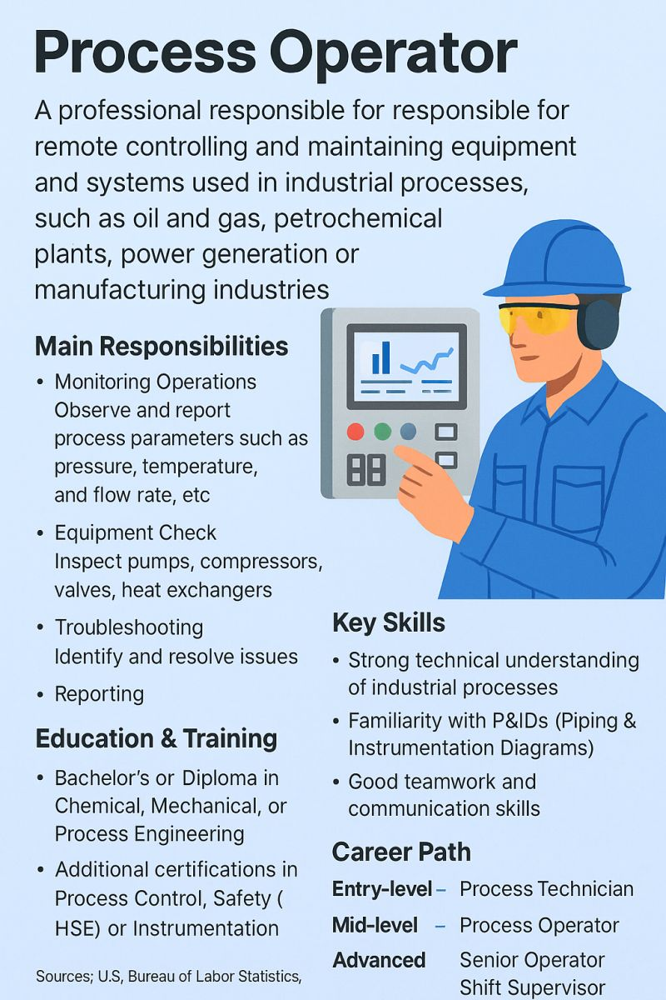
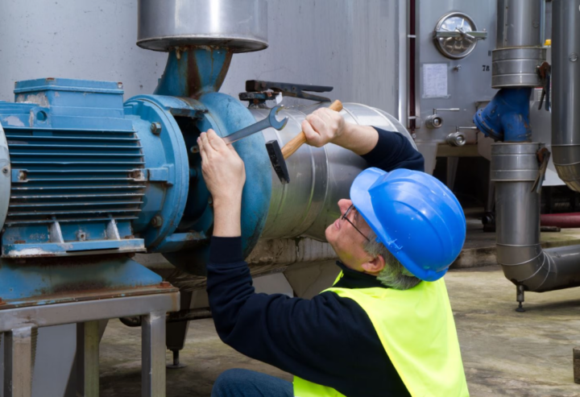
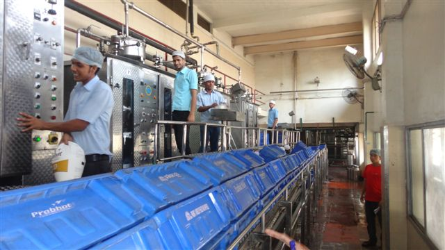
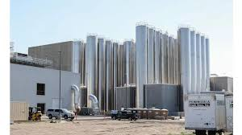
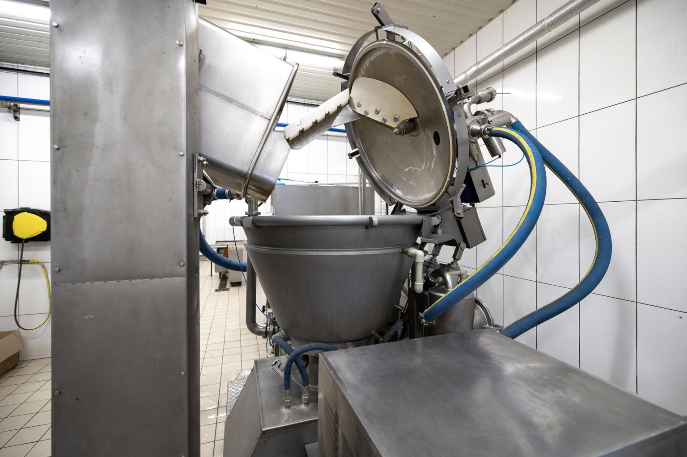
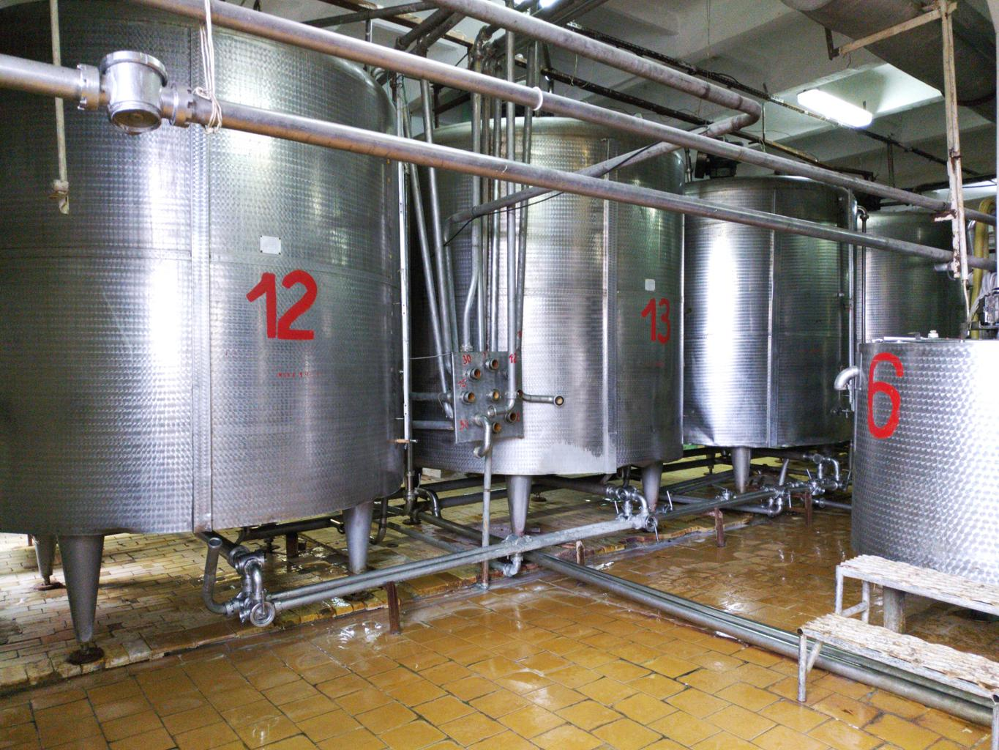
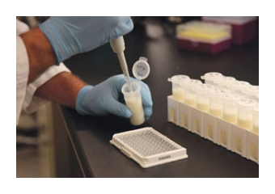
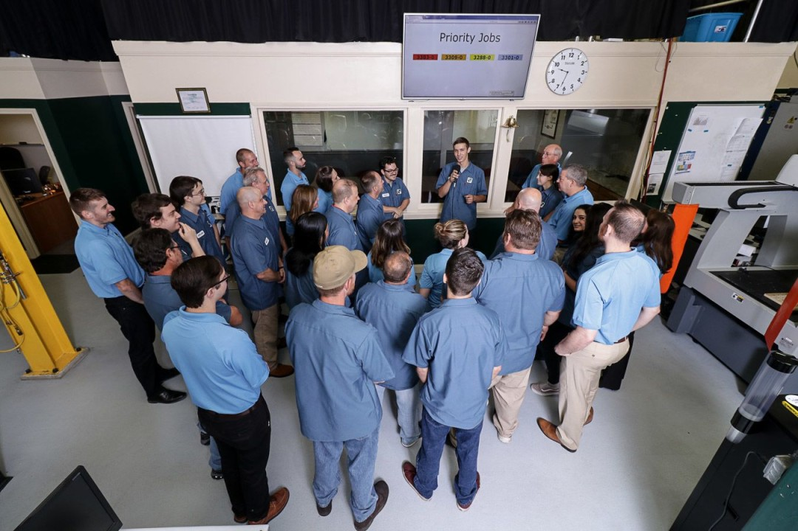
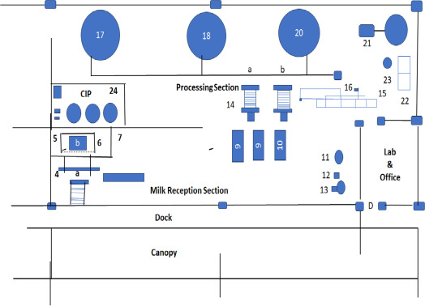
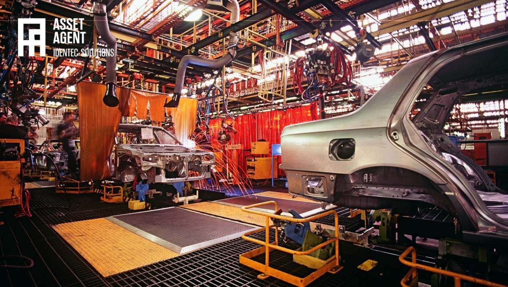

Turning dairy plants into profitable, efficient operations
SSS DairyTech Consultants helps dairy plants improve production efficiency, quality systems, product yield, laboratory practices, product flavour, texture, microbial quality, and profitability through practical hands-on consulting.
- Raw milk MBRT improved from 30 minutes to 150 minutes
- Pouch milk MBRT improved from 5.45 hours to 7.45 hours
- Ghee grain and flavour improved through process optimisation
- Curd structure and taste improvement resulted in doubling the sales
Performance Snapshot

About the Consultant
Mr. S. Somasundaram
Senior Dairy Technologist & Industry Professional with over 45 years of experience in dairy plant operations, technical management, and consulting.
He has worked with major dairy organizations including Aavin, served as Plant Head at Heritage Foods India Ltd, and later as CEO of Vijay Dairy & Farm Products Pvt Ltd, Trichy. Since 2018, he has been working as a freelance dairy consultant, supporting plants in technical audits, process optimisation, quality and hygiene system strengthening, yield improvement, and cost-efficiency programs.
Key Expertise
- Dairy plant technical auditing and performance improvement
- Milk procurement system improvement and MBRT strengthening
- Material balance and yield optimization
- Quality systems implementation and microbial contamination control
- CIP system management, sanitation control, and chemical cost optimization
- Energy optimization, operational cost reduction, and daily Gemba systems
Dairy Plant Technical Audit Program
Gap analysis and improvement roadmap for quality, yield, and operating cost.
Detailed Information
Dairy Plant Improvement Methodology
- Observe plant operations on the shop floor
- Review daily production, quality, and dispatch reports
- Conduct KRA review with department heads
- Analyse deviations, losses, and quality variation
- Run daily Gemba meetings for action tracking
- Implement corrective actions with follow-up review
Department-wise Key Result Areas

- Vendor Selection
- Cost Negotiation
- Material Quality
- Timely Procurement
- Inventory Control
- Storage Hygiene
- Stock Accuracy
- Issue & Receipt Discipline
- Cost Control
- Production Efficiency
- Product Quality
- Employee Motivation
- Equipment Reliability
- Energy Consumption
- Cost Controls
- Schedules
- Quality Control
- Testing Efficiency
- Training
- Complaint Reduction
- On-Time Dispatch
- Cold Chain
- Correct Quantity
- Safety
Training Programs for Dairy Plant Staff


- Raw milk procurement improvement and MBRT improvement program
- Material balancing from milk payment to milk receipt and processing
- Process milk training for aroma and consistency
- Good Manufacturing Practices (GMP) for dairy plants
- Packing film yield improvement and loss control
- Energy management in dairy plants
- Quality laboratory training and BIS/FSSAI compliance
- CIP system management and chemical cost control
- SOP development and implementation training
- New dairy product development and pilot trials
Services



Comprehensive audit covering process efficiency, material balance, quality systems, hygiene, and production cost.
Better process control, reduced losses, and optimized parameters.
Increase product yield through process corrections and raw material control.
Strengthening quality monitoring and documentation aligned with BIS/FSSAI.
Practical SOPs and implementation training for plant teams.
Advisory for planning, layout, machinery selection, and commissioning.
Key Achievements


30 minutes → 150 minutes
5.45 hours → 7.45 hours
Significant product quality enhancement
Sales doubled
1000 litre plant commissioned, 50–60 SKUs developed
10–12% improvement
Major Dairy Clients
- VKA Milk – Karur
- Aroma Milk – Coimbatore
- Rusi Milk – Winner Dairy Pondicherry
- Amrut Dairy – Pollachi
- Ruby Milk – Madurai
- SMD Milk – Erode
- Jallikattu Milk – RKR Dairy Products
- SNP Milk – Madurai
Online Technical Support
- Sandeep Paneer – Mysore
- Mastany Lassi – Khandwa
- Fish Tail Dairy – Pokhara, Nepal
- Alvas Dairy – Singapore
- Velan Foods – Madurai
Major Ongoing Project
₹150 Crore fully automated integrated dairy plant with PLC-based control and SCADA monitoring. Includes milk pouch packing, sterilized milk, powder, butter, ghee, yogurt, paneer, and ice cream production.


Contact
 SSS DairyTech Consultants — consulting across India and internationally.
SSS DairyTech Consultants — consulting across India and internationally.
Email: contact@sssdairytech.com
Website: www.sssdairytech.com
Mobile: +91-9944427435, +91-9443575974